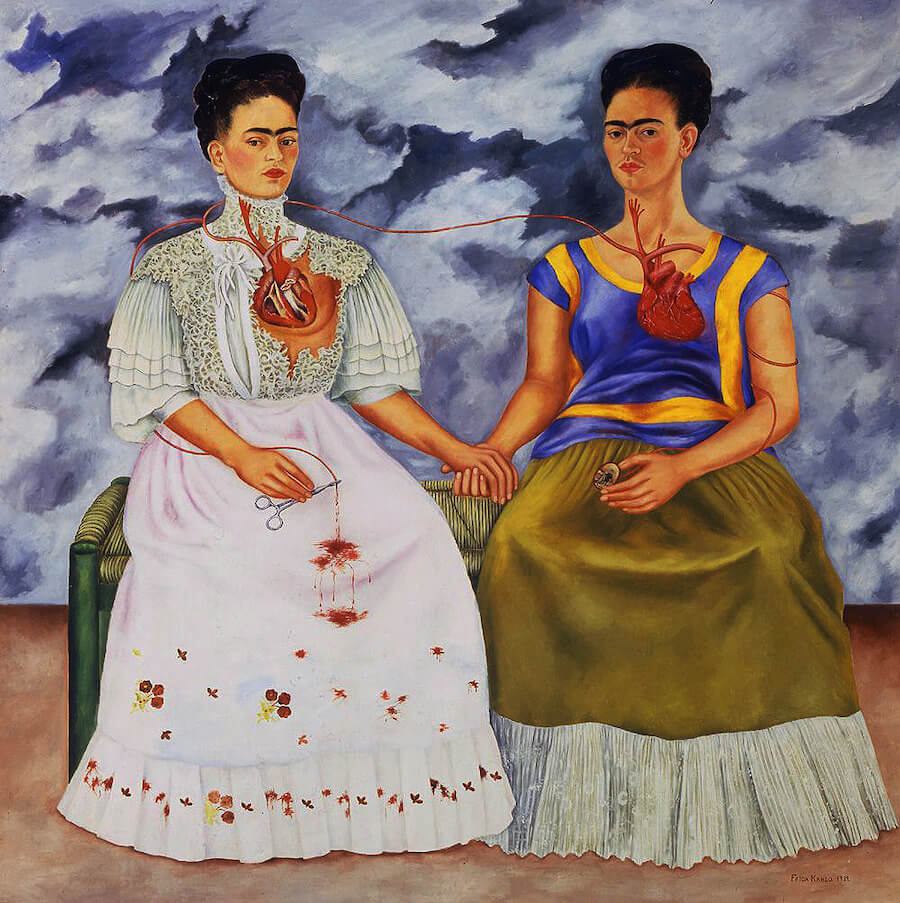
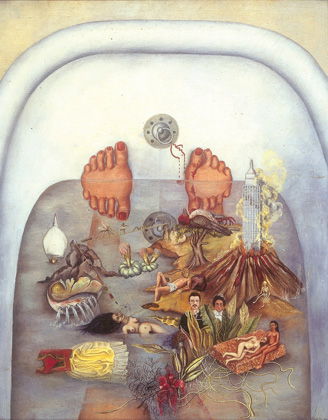
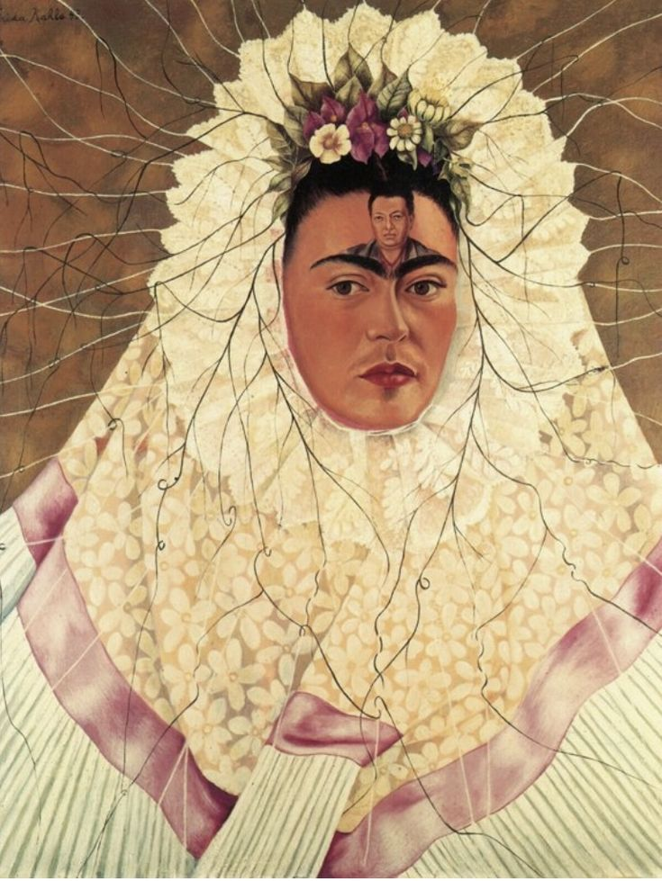

Droomwereld & kunstwerken
De kunstwerken van Frida Kahlo zijn realistisch geschilderd, maar tegelijkertijd is niets wat het lijkt en zit haar kunst vol met symboliek. Ze ontleedde het leven in haar werken, alle details in Kahlo’s kunst hebben betekenis en vertellen samen een verhaal. Ze creëerde haar eigen werelden. Frida schilderde vooral vaak zichzelf, in veel verschillende versies, dit was voor haar een manier om haar identiteit te ontdekken en uit te drukken.




